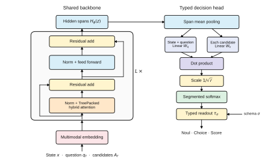
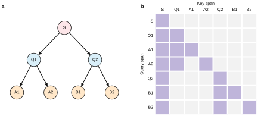
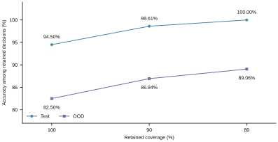
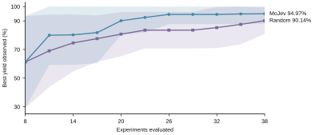
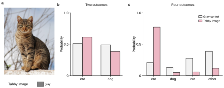
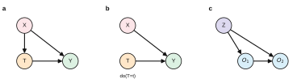
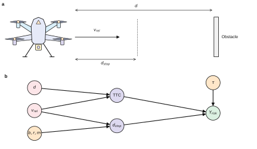

{kind=link}
Top-one accuracy
12,000 evaluation decisions from test and out-of-distribution files.
MoLeMo Lab / research project
MoJev supports up to 1M tokens of context and multimodal text and image inputs. A caller-defined schema turns this evidence into a probability distribution over the permitted outcomes—in one forward pass.
One passmany typed decisionsMoLeMo Lab contact@molemo.org
MoJev shares the state across schema fields, isolates candidate branches with TreePacked Attention, and reads out a distribution through a typed decision head.
Inside the method
Architecture figure from the MoJev preprint. Open for the full-resolution vector diagram.
12,000 evaluation decisions from test and out-of-distribution files.
Accuracy and confidence measured on the same evaluation decisions.
Average per decision at batch 8, with no autoregressive output tokens.
Supports up to one million tokens of context.
01 / The mechanism
Every decision is defined at request time. MoJev scores the named candidates, normalizes their utilities within each field, and returns a probability law in the caller's schema.
Supply a state, a question, and the allowed values for a Choice, Noul, or Score field.
TreePacked Attention lets candidate branches read the same evidence without reading one another.
The typed head converts candidate utilities into probabilities and a schema-bound result.
TreePacked Attention
Questions attend to the shared state. Each candidate attends to the state, its own question, and its own tokens. This visibility pattern evaluates multiple fields in one packed backbone pass.
Read the method
RLCD defines the typed decision problem. CDPO combines grouped preference learning with Brier scoring of observed outcomes; the packed predictions feed the loss in the same training pass.
02 / Experimental evidence
The preprint tests decision quality, sequential search, visual evidence, and uncertainty. Select an experiment to see its figure and reported result.
MoJev reaches 93.23% top-one accuracy and 0.79% expected calibration error on 12,000 decisions. Ranking decisions by normalized predictive entropy exposes high-error cases for selective prediction.
Selective-prediction figure: retained coverage levels on a 400-example test subset and an OOD split.

On a measured direct-arylation grid, MoJev-guided search reaches 94.97% mean best yield after 38 experiments, versus 90.14% for random search.
Five paired seeds on the Shields et al. direct-arylation benchmark. Each run begins with eight identical experiments, then evaluates three new conditions per round. Bands show ±1 sample standard deviation.

A tabby photograph replaces a gray control while the question and candidate set stay fixed. For the four-outcome choice, predicted P(cat) rises from 0.207 to 0.773.
Two- and four-outcome distributions use the same visual intervention. Photograph: Alvesgaspar / Wikimedia Commons, CC BY-SA 3.0.

Uncertainty modeling
MoJev returns a probability for every candidate. Normalized predictive entropy measures how concentrated that distribution is: 0 when one outcome has all the probability, and 1 when all outcomes are equally likely.
For the gray control and the cat photograph, compute entropy over the same candidate set and compare it alongside P(cat). The probability tracks support for the cat; entropy tracks uncertainty across all K outcomes.
03 / Where distributions matter
A calibrated distribution is useful beyond selecting the top candidate: it supports belief updates, information acquisition, and decisions under a specified mechanism.
Potential outcomes, interventions, and sequential evidence share a distribution-valued decision interface.

With the scene fixed, changing collision thresholds or braking parameters reveals the response of the predicted risk distribution.

04 / Research resources
The paper, implementation, trained checkpoint, and MoJev-Mix data are available from the MoLeMo Lab repositories.
Citation
@misc{molemo2026mojev,
title = {MoJev: Schema-Conditioned Causal Decision Learning with Large Language Models},
author = {{MoLeMo Lab}},
year = {2026},
note = {Preprint},
url = {https://github.com/MoLeMo-Lab/mojev/blob/master/paper/mojev-preprint.pdf}
}{kind=link}
{kind=link}
{kind=link}
{kind=link}
{kind=link}
{kind=link}
{kind=link}